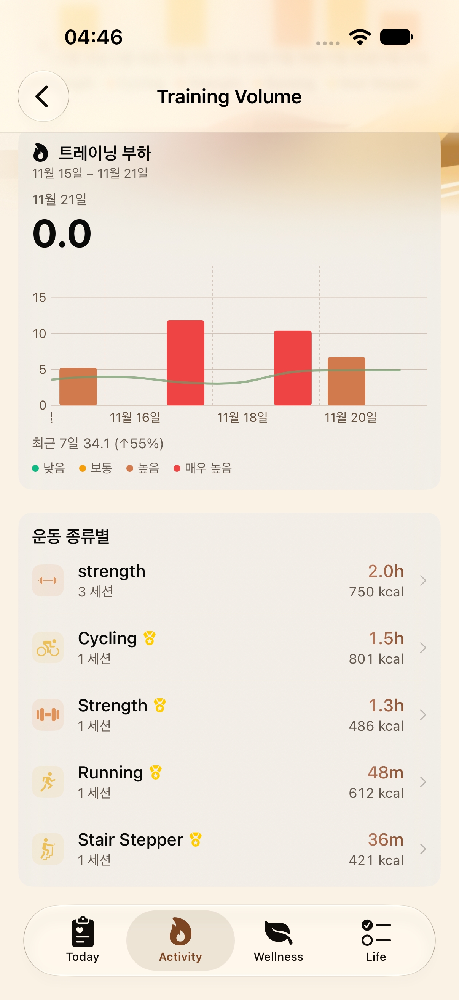
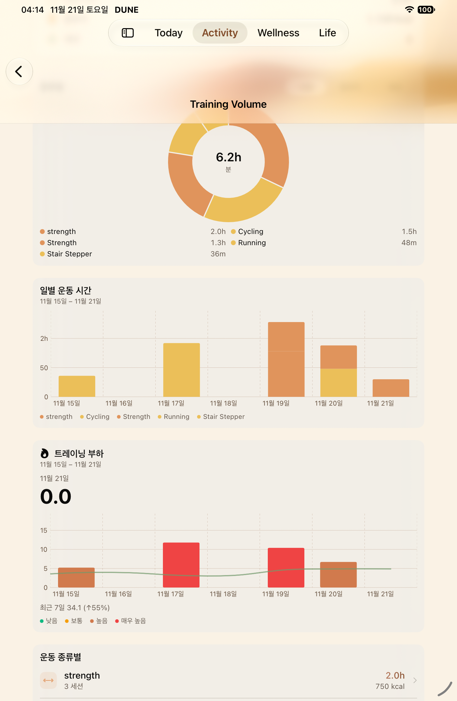
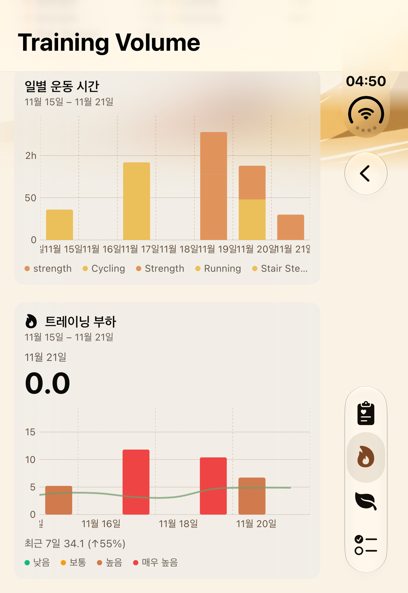
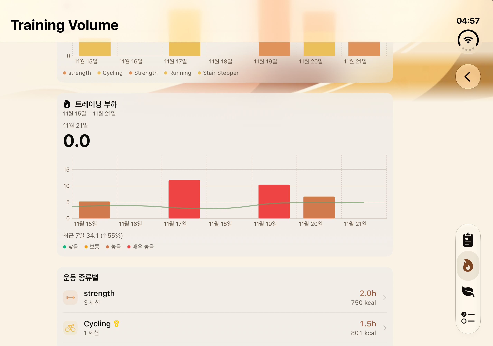

전체 디자인맵
R06 · A06
기능별 원격 소스와 최종 통합본을 파일 단위로 대조했다. 각 이미지를 통과한 개별 UI 테스트에 연결했다. Duo 내부 화면은 지정된 체크포인트에서 활성 LCD-1 프레임버퍼를 직접 캡처했다. 파일별 빌드·크기·관찰 결과는 아래 기록에 있다. source 67c7fef94e88e615d011d7ce1d35fb00fc004ef9; build 112f1d6e8b8627579efe5fa334735ff84c4f01d1,676e10da12b4cc957e8cb6eb516fbee14af5035f,e4600dc0700a0362fc4dcc42a0def7bf96c0b475,0a266b6ad3dedb4b8cb2e990f9e27cb77a54a871.

regular · R06-screen · 1206×2622
선택 날짜 11월 21일과 값 0.0, 간격을 둔 날짜 눈금, 7일 합계 및 범례를 한 화면에서 읽을 수 있다.

ipad · R06-screen · 1512×2316
iPad A06 실제 PNG에서 선택 날짜(11월 21일)와 큰 부하 값 0.0이 차트 위에 있고, 7일 막대·이동평균선·최근 7일 34.1(↑55%) 비교·고정 구간 범례가 모두 보인다. 카드 하단과 범례가 화면 안에 있으며 레이아웃 겹침은 보이지 않는다. 이 한 장은 탭/빈 상태나 다른 날짜 선택을 검증하지 않는다.

duo · R06-screen · 1398×2034
접힌 외부 화면에서 선택 날짜·값, 훈련 부하 그래프 전체, 16·18·20일 눈금과 합계 및 범례가 함께 보인다. 위쪽 일별 운동 시간 카드는 별개 차트다.

duo-open · R06-screen · 2853×2007
Duo 내부 가로 화면에서 선택일과 0.0, 막대 그래프 전부, 7일 합계와 범례가 같은 카드 안에 표시된다.미검증 기기: none by device. 미검증 화면: none by screen ID. 육안 검토: 원본 화면 검토 완료; 선택 날짜 11월 21일과 값 0.0, 간격을 둔 날짜 눈금, 7일 합계 및 범례를 한 화면에서 읽을 수 있다. iPad A06 실제 PNG에서 선택 날짜(11월 21일)와 큰 부하 값 0.0이 차트 위에 있고, 7일 막대·이동평균선·최근 7일 34.1(↑55%) 비교·고정 구간 범례가 모두 보인다. 카드 하단과 범례가 화면 안에 있으며 레이아웃 겹침은 보이지 않는다. 이 한 장은 탭/빈 상태나 다른 날짜 선택을 검증하지 않는다. 접힌 외부 화면에서 선택 날짜·값, 훈련 부하 그래프 전체, 16·18·20일 눈금과 합계 및 범례가 함께 보인다. 위쪽 일별 운동 시간 카드는 별개 차트다. Duo 내부 가로 화면에서 선택일과 0.0, 막대 그래프 전부, 7일 합계와 범례가 같은 카드 안에 표시된다.; 기능별 캡처 검토.
원본 파일명·SHA-256·크기·테스트 출처